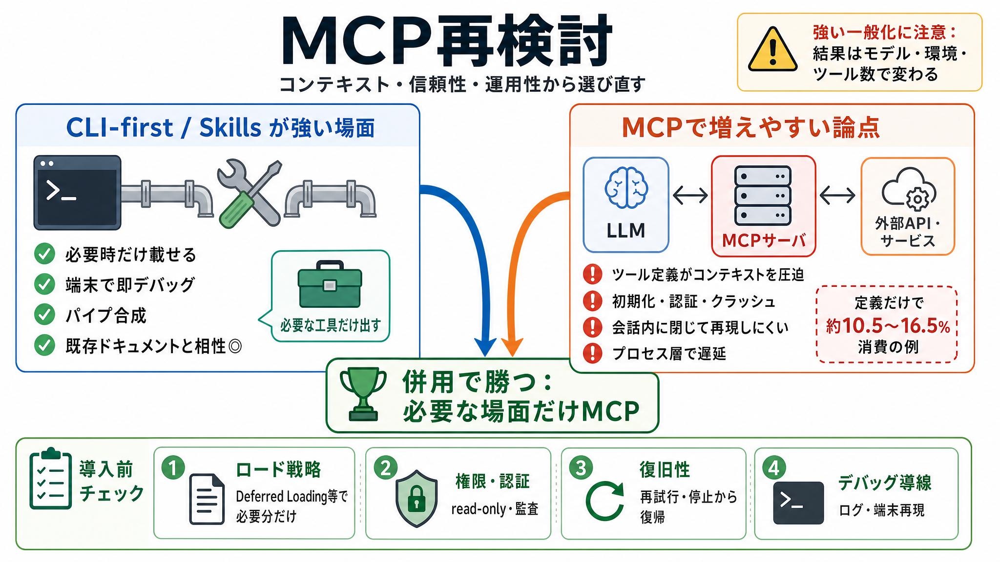

CLI-Based Agents vs MCP: The 2026 Showdown That Every AI ...
MCP enables programmatic tool browsing through schema definitions. An agent can inspect available tools, understand thei…

MCP enables programmatic tool browsing through schema definitions. An agent can inspect available tools, understand thei…
While there are emerging mitigations for this heavy context footprint — such as lazy loading, tool search, and dynamic t…
MCP vs. CLI: which is actually better for agent tool use? Laurie Voss, Head of Developer Relations at Arize AI runs 500 …
Providing a protocol for discovering available tools and executing them. Creating a universal, plug-and-play format wher…
If you ever debated whether you should build a MCP server vs. a CLI tool, this video is for you. You might be surprised …